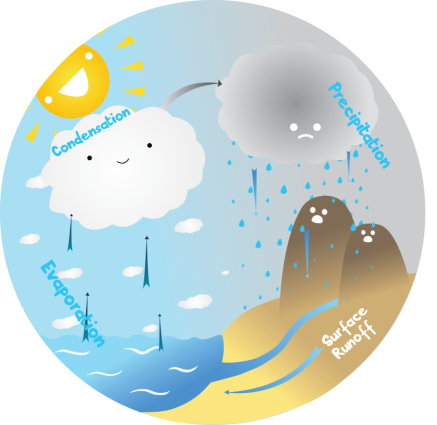
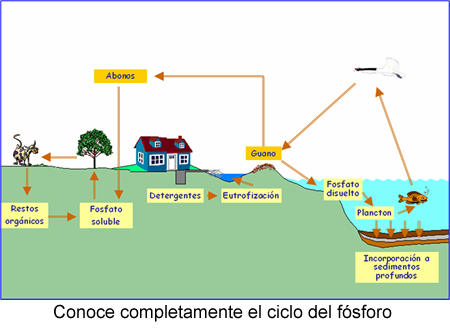

Ciclo del agua – La mayor parte del tejido vivo se compone de agua. En el cuerpo humano los nutrimentos vitales solubles en agua son transportados por la sangre, los jugos digestivos y el líquido linfático, además de los desperdicios son excretados en fluidos de la orina y de la transpiración.
El agua se mueve a través de nuestro ecosistema utilizando el ciclo del agua, el cual se lleva a cabo de la siguiente manera:
Evaporación – La radiación solar determina la evaporación de los océanos y aguas continentales y ésta se eleva a la atmósfera como vapor de agua.
Transpiración – Las plantas aportan vapor de agua a la atmósfera sudando.
Condensación – Las corrientes de aires transportan el vapor de agua a grandes distancias, formando nubes.
Precipitación – Cuando se enfría el aire que conduce al vapor, éste se condensa en agua líquida y se precipita de diversas maneras, en forma de lluvia, granizo o nieve.
Además el agua puede tomar diferentes cursos:
Ciclo del carbono y del oxígeno – Tiene su curso en depósitos de la hidrosfera, litosfera y atmósfera, así como en los seres vivos.
La vida en el planeta Tierra depende del proceso de fotosíntesis realizado por los organismos autótrofos fotosintéticos. Este proceso es una vía importante que utiliza el bióxido de carbono, agua y luz solar para aportar el combustible necesario para las demás formas de vida y las plantas exhalan oxígeno a través de sus maravillosas estructuras verdes, las hojas.
La fotosíntesis y la respiración son procesos complementarios. Los productos del primero son utilizados en el segundo proceso y parte de los productos de la respiración, como el bióxido de carbono, se vuelven a utilizar en la fotosíntesis. Podemos definir la respiración como el proceso mediante el cual los organismos utilizan glucosa y oxígeno (en los organismos aeróbicos) para generar otra forma de energía llamada ATP. Sin embargo, las bacterias pueden producir carbono en forma de gas metano y también CO2.
Ciclo del nitrógeno – Es un ciclo biogeoquímico gaseoso y su principal depósito es la atmósfera, que contiene 79% de nitrógeno. El nitrógeno es indispensable para la vida, ya que forma parte de los aminoácidos que constituyen las proteínas. Existen tres formas para fijar el nitrógeno
En resumen, el ciclo del nitrógeno se presenta en cuatro pasos.
Ciclo del fósforo – El fósforo es otro elemento indispensable para la vida, su principal depósito son las rocas sedimentarias y es un componente de los ácidos nucleicos (como el ADN y ARN), del ATP (molécula energética necesaria para todas nuestras funciones vitales) y también junto con el calcio fortalece los huesos y dientes.

La tierra como un todo, un planeta vivo y dinámico
La tierra está formada por:
De esta manera, el funcionamiento del planeta y de cada ecosistema sucede a través de procesos